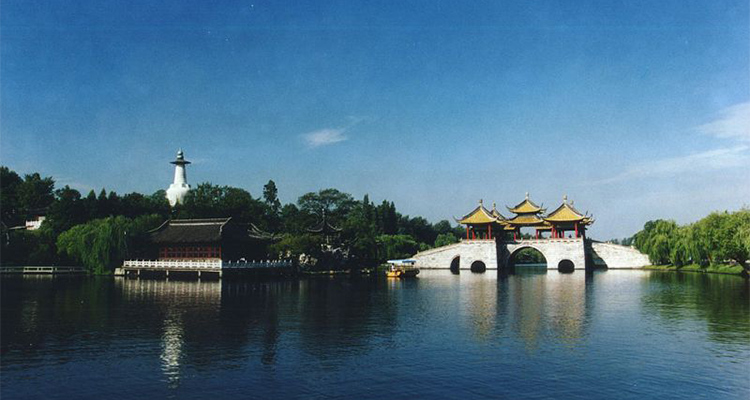
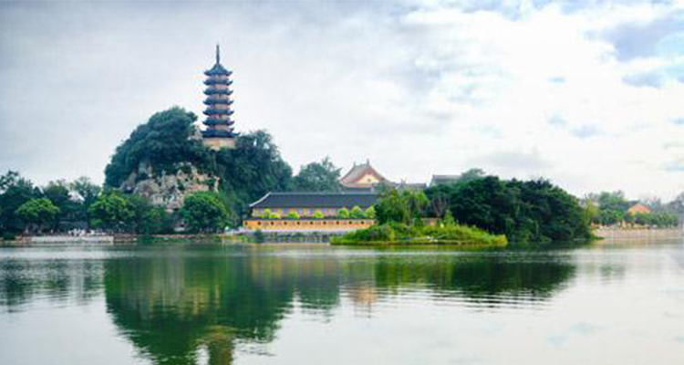

马上农历就要到三月了，三月，春的到来，万物开始复苏，心之所往，江南为之倾倒，古来烟花三月下扬州，今往春之行走江南春。游走在江南的大地上，感受小桥流水的恬静生活，穿梭在青砖碧瓦的弄堂间，体验江南文化精萃之感。春天的季节，我愿沉醉在这里，心灵都仿佛化作流水，润无声，醉心间。一江之隔，两城之间。一座小城的醉人风采，一座名城的风华绝代。
镇江，古称“宜”、“朱方”、“丹徒”、“京口”、“润州”。其名字来历有两种说法：一是因镇江北部沿江岸—带地势比较低洼，在古代常受水害，所以在水名之前加一吉祥词，以示祈望而得名。二是在公元1113年宋代(宋徽宗政和三年)改润州为镇江府时才有的。据说，当时统治者认为镇江的地理位置优越，背山面江，形势雄险，为镇守江防之地，故取名镇江。
镇镇江的景色囊括起来其实就是，一街、一寺、三山。一街就是西津渡古街，一寺就是金山寺也叫江山禅寺，两山就是南山和茅山。镇江美食囊括来说，以淮扬菜系为特色，兼收南北风味。镇江美食有“三鱼、三怪”之称。“三鱼”即“长江三鲜”鲥鱼、刀鱼、鮰鱼；“三怪”则为肴肉、香醋、锅盖面，以“镇江三怪”最为出名，有句俗语说得好“香醋摆不坏，肴肉不当菜，面汤里面煮锅盖”。
扬州，古称广陵、江都、维扬等，中国首批历史文化名城，地处江苏省中部，东与盐城市、泰州市毗邻；南临长江，与镇江市隔江相望；西南部与南京市相连；西北部与淮安市和安徽省滁州市接壤，有着“淮左名都，竹西佳处”之称；又有着中国运河第一城的美誉。扬州被誉为“扬一益二”有“月亮城”的美誉。
扬州的景点更加丰富一点，其中一园是个园，中国四大名园之一，另一园是何园，晚清第一园之称。一街是关东街，紧挨个园，仿古美食一条街。一湖就是瘦西湖。扬州是淮扬菜的发源地，扬州菜以拆烩鲢鱼头、扒烧整猪头、蟹粉狮子头“三头”为代表，大煮干丝体现了淮扬菜的刀功，“三套鸭”则将菜鸽藏于野鸭腹中再将野鸭藏于家鸭腹中，野鸭喷香，菜鸽细酥，大胆的创新造就了无上美味。三头宴和红楼宴、全藕宴一起被称为扬州菜肴三绝。扬州小吃也极负盛名。大名鼎鼎的扬州干丝，一片豆腐干可被分成十七层然后切丝，丝细如发；闻名全国的蟹黄包，每年十月取饱满的膏蟹蟹黄，配以精白面粉制成，可谓扬州点心中的极品。此外，扬州炒饭也是来到一定不能错过的传奇美味。
1、关于美食和购物，不管是扬州还是镇江，基本都可以选择老字号的餐厅就餐哦；
2、关于游玩线路，选择镇江、扬州一起游玩的朋友，两天时间是完全够玩的，镇江的金山寺最佳游玩时间是早晨，西津渡的晚上也是十分漂亮的。